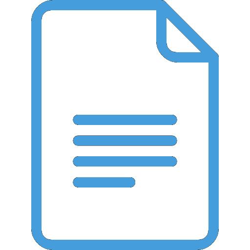

<mat-sidenav-container class="example-container" >
    <mat-sidenav mode="side" opened>
        <mat-nav-list>
            <div> <p>SEARCH</p> </div>
            <div [routerLink]="'main'"> <p>MAIN</p> </div>
            <div [routerLink]="'notifications'"> <p>NOTIFICATIONS</p> </div>
            <div [routerLink]="'map'"> <p>MAP</p> </div>
            <div [routerLink]="'mysafetydocs'"> <p>DOCUMENTS</p> </div>           
            <div [routerLink]="'devices'"> <p>ADD ELEMENT</p> </div>
            <div> <p>ADD TEAM</p> </div>
            <div> <p>ADD CONSUMER</p> </div>
            <div> <p>SETTINGS</p> </div>
            <div>  <p>LOG OUT</p>  </div>      
            <div [routerLink]="'profile'"><p>PROFILE</p> </div> 
            <div [routerLink]="'registeredUsers'"><p>PROFILE</p> </div> 
        </mat-nav-list>
    </mat-sidenav>
    <mat-sidenav-content>
        <router-outlet></router-outlet>
    </mat-sidenav-content>
</mat-sidenav-container>

